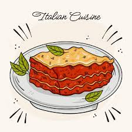

Lasagna recipe

Description
Lasagna is a type of pasta. It is usually served in overlapping sheets interspersed with layers of ingredients to taste, most often meat in bolognese sauce and béchamel. Its origin is Italian and the dish usually prepared with meat is called baked lasagna.
Ingredients
- 4 tablespoons olive oil
- 3 cloves garlic
- 1 large onion
- 2 lbs. ground beef
- 1 teaspoon basil (dried)
- 1/2 teaspoon oregano (dried)
- Dash nutmeg
- 4 tablespoons worcheshire sauce
- 1 tablespoons A-1 Steak Sauce
- 1 tablespoon Heinz 57 Sauce (if you like less sweet, leave this out)
- 4 tablespoons red wine (Chianti)
- 1 can tomato paste
- 4 cups whole canned tomatoes
- 16 oz. cottage cheese
- 1 lb. lasagna noodles (optional homemade lasagna noodles below)
- 1 1/2 lbs. mozzarella cheese
- Ingredients for Homemade Noodles
- 1 cup semolina flour
- 1 cup flour
- 1/3 cup water
- 2 large eggs
- 2 tablespoons extra virgin olive oil
How to make lasagna
- Start by making the sauce with ground beef, bell peppers, onions, and a combo of tomato sauce, tomato paste, and crushed tomatoes. The three kinds of tomatoes gives the sauce great depth of flavor.
- Let this simmer while you boil the noodles and get the cheeses ready. We're using ricotta, shredded mozzarella, and parmesan -- like the mix of tomatoes, this 3-cheese blend gives the lasagna great flavor!
- From there, it's just an assembly job. A cup of meat sauce, a layer of noodles, more sauce, followed by a layer of cheese. Repeat until you have three layers and have used up all the ingredients.
- Bake until bubbly and you're ready to eat!
Back home page